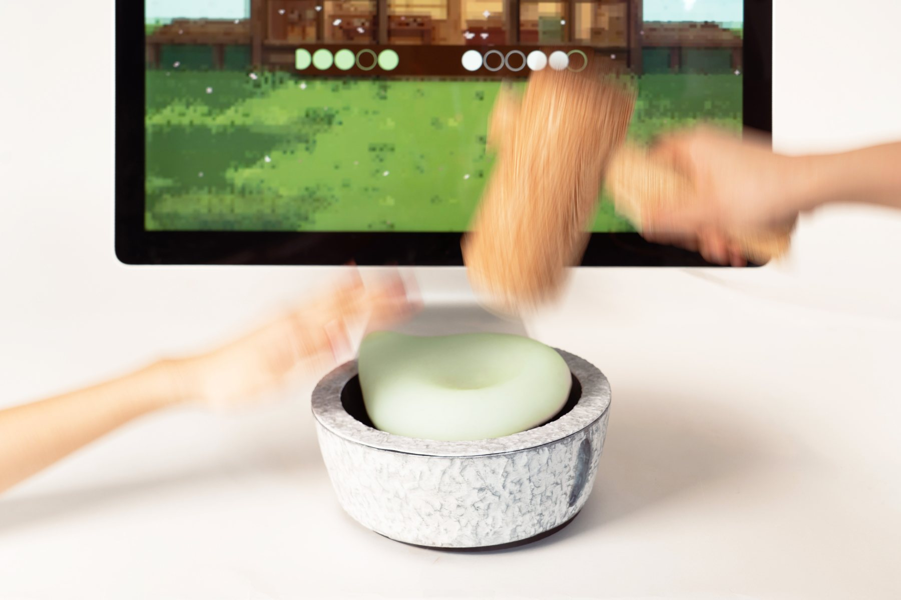

MochiMash

Design methodology
User-centered/interaction design
Mechanism design
Game design
Course4.043: Design Studio: Interaction Intelligence (Project I)
Timeline5 weeks, Spring 2026
TeamJoanne Hong (MIT '27), Lucy Li (MIT Media Lab)
Tools
SOLIDWORKS
Electronics
Casting
FDM 3D printing
MochiMash is a two-player rhythm game inspired by the tradition of mochi pounding. As circles and squares flash across a one-pixel-row display, Player 1 swivels the mochi bowl to match the colors on screen and folds the mochi on the beat, while Player 2 pounds it with the hammer. Every fold and pound releases "flour" that clouds the screen, and Player 2 wipes it away by squeezing a trigger on the hammer's handle. I built MochiMash with Joanne Hong and Lucy Li.
[CONFIRM: add your role — e.g., mechanisms, fabrication, electronics.]
Context/Motivation
MochiMash was our first project in 4.043: Design Studio: Interaction Intelligence, where the brief was to create a one-dimensional game and a custom controller for it. The project introduced in-hardware sketching and prototyping, state diagrams, building our own electronics, and methods for evaluating and critiquing interaction design.
Problem Framing
Constrained to one dimension — a single row of pixels — we had to find ways to keep the game engaging. We found that large, exaggerated motions were a fun way to get players invested. We also needed a gameplay format that could live in 1D space, and were drawn to rhythm games for the nostalgia they held from our childhoods.
Process
Materiality
We wanted the controllers to feel like the real tools, so we explored casting and 3D printing stone and wood textures, followed by post-processing.
[NEEDS INPUT: what was cast vs. printed, and what finishing made it read as stone/wood?]
Swivel mechanism
The bowl swivels so Player 1 can change the mochi's color to match the cues on screen.
[NEEDS INPUT: how the swivel senses position, and why rotation felt right for this action.]
Hammer mechanism
Player 2 pounds on the beat and squeezes a trigger in the handle to wipe away flour, so one tool carries two actions.
[NEEDS INPUT: how the hammer senses a hit, and how you made it feel weighty but safe.]
Tuning the LED strip
[NEEDS INPUT: what needed fine-tuning — timing, brightness, how the rhythm is visualized?]
Room for Improvement
[NEEDS INPUT]
Outcome
- [NEEDS INPUT: playtest observations, e.g., how many people played, how long rounds lasted.]
Reflection
[NEEDS INPUT]